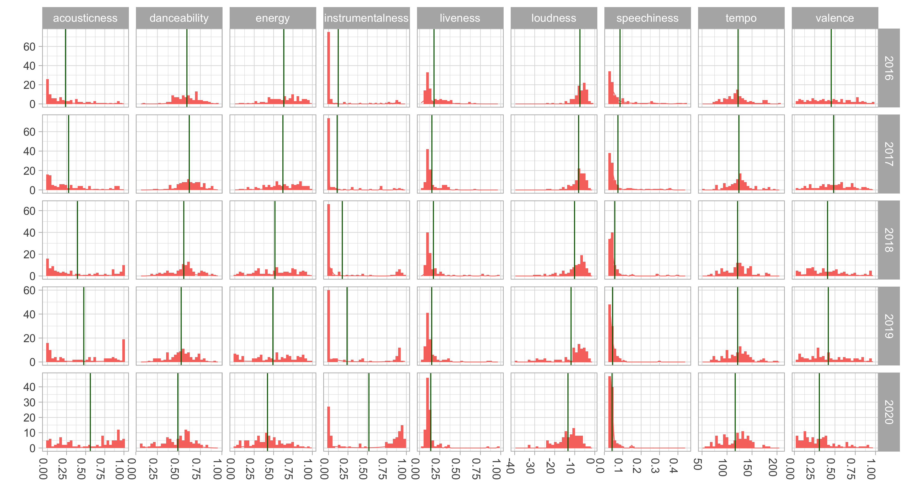

Spotify Top 100 Songs Analysis
I’ve been an avid Spotify user since my younger high-school gaming days (hipster flex), but Spotify only recently started releasing yearly music reviews that summarize the music you’ve listened to throughout that year. After seeing mine for 2020, I wondered how much my music taste had changed over time, especially given the 2020 coronavirus pandemic. Thankfully there’s a R package called spotifyr that provides intuitive wrapper functions that allows one to analyze practically the entirety of Spotify music data! What follows is a quick, informal dive into this. (For getting setup, I suggest checking out the Github repo here and this tutorial here.)
The Data and Song Features
To answer my question, I’m using my “Top 100 songs of the Year” from 2016-2020 (500 songs), looking specifically at nine features associated with each song (pretty neat that Spotify does this!). I knew I’d been listening to more instrumental, acoustic music since I started learning to play guitar, so I was curious about what the data showed. The features, from their API:
acousticness: A confidence measure from 0.0 to 1.0 of whether the track is acoustic. 1.0 represents high confidence the track is acoustic
danceability: How suitable a track is for dancing based on a combination of musical elements including tempo, rhythm stability, beat strength, and overall regularity. A value of 0.0 is least danceable and 1.0 is most danceable.
energy: A measure from 0.0 to 1.0 and represents a perceptual measure of intensity and activity. Typically, energetic tracks feel fast, loud, and noisy. For example, death metal has high energy, while a Bach prelude scores low on the scale. Perceptual features contributing to this attribute include dynamic range, perceived loudness, timbre, onset rate, and general entropy.
instrumentalness: Predicts whether a track contains no vocals. “Ooh” and “aah” sounds are treated as instrumental in this context. Rap or spoken word tracks are clearly “vocal”. The closer the instrumentalness value is to 1.0, the greater likelihood the track contains no vocal content. Values above 0.5 are intended to represent instrumental tracks, but confidence is higher as the value approaches 1.0.
liveness: Detects the presence of an audience in the recording. Higher liveness values represent an increased probability that the track was performed live. A value above 0.8 provides strong likelihood that the track is live.
loudness: The overall loudness of a track in decibels (dB). Loudness values are averaged across the entire track and are useful for comparing relative loudness of tracks. Loudness is the quality of a sound that is the primary psychological correlate of physical strength (amplitude). Values typical range between -60 and 0 db.
speechiness: Detects the presence of spoken words in a track. The more exclusively speech-like the recording (e.g. talk show, audio book, poetry), the closer to 1.0 the attribute value. Values above 0.66 describe tracks that are probably made entirely of spoken words. Values between 0.33 and 0.66 describe tracks that may contain both music and speech, either in sections or layered, including such cases as rap music. Values below 0.33 most likely represent music and other non-speech-like tracks.
tempo: The overall estimated tempo of a track in beats per minute (BPM). In musical terminology, tempo is the speed or pace of a given piece and derives directly from the average beat duration.
valence: A measure from 0.0 to 1.0 describing the musical positiveness conveyed by a track. Tracks with high valence sound more positive (e.g. happy, cheerful, euphoric), while tracks with low valence sound more negative (e.g. sad, depressed, angry).
Uh Oh
Wellp, looking at the different facets, looks like acousticness and instrumentalness has increased, just as suspected. But valence (positive emotion) has decreased, hitting a low in 2020! Whether or not I was actually sadder on average each day of 2020 is another story…

Here’s a closer look via some bar plots. The general trend is that everything has decreased for each feature except acousticness and instrumentalness. Loudness has decreased though, which maybe just means I’m getting older… or more sensitive to loud music. But it makes sense if you think about the increase in acousticness.

And numbers. Voilà, une table.
| Features | 2016 | 2017 | 2018 | 2019 | 2020 |
|---|---|---|---|---|---|
| acousticness | 0.24 | 0.28 | 0.39 | 0.48 | 0.56 |
| danceability | 0.59 | 0.62 | 0.56 | 0.53 | 0.49 |
| energy | 0.63 | 0.62 | 0.52 | 0.49 | 0.42 |
| instrumentalness | 0.12 | 0.11 | 0.18 | 0.24 | 0.52 |
| liveness | 0.18 | 0.15 | 0.17 | 0.15 | 0.14 |
| loudness | -7.41 | -8.07 | -10.11 | -11.85 | -13.37 |
| speechiness | 0.09 | 0.07 | 0.06 | 0.04 | 0.04 |
| tempo | 122.08 | 123.69 | 121.12 | 121.26 | 116.32 |
| valence | 0.45 | 0.48 | 0.41 | 0.42 | 0.31 |
Inconclusive Conclusions
I’d say from personal experience that this trend toward increased acousticness and instrumentalness is a general feature of widened musical taste. I imagine it’s also associated with more bouts of work and study sessions, especially in 2020 given I started graduate school. But I also discovered more music of an acoustic, instrumental nature (Olafur Arnalds, City of the Sun, Max Richter) which I played HEAVILY on repeat while slacklining and rollerblading, two new hobbies I picked up over the summer. My love of fingerpicking on guitar probably has an influence on that too.
As for the valence, well, let’s find out next year if that changes. I don’t actually feel like my subjective experience of days are all too different from the previous years, although some days are definitely lonelier. In moments like those I often turn to music. What the data doesn’t capture is the upswing in mood I feel from that form of connection. And don’t worry, I’m still dancing in my kitchen.